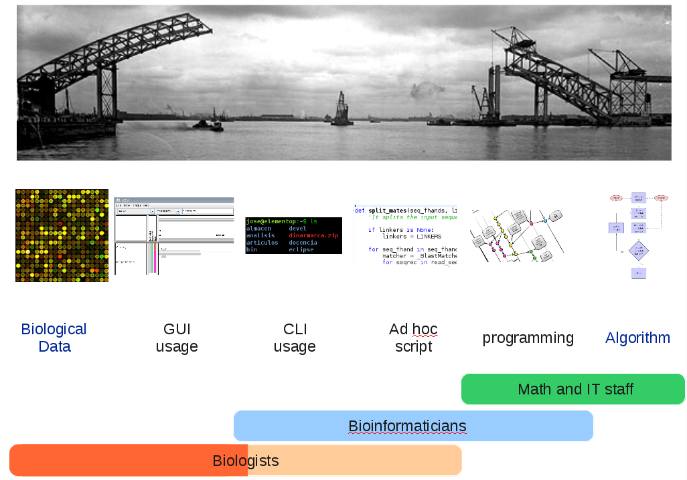

Presentación del curso¶
El presente curso está orientado a investigadores, estudiantes y profesionales de las ciencias de la vida que se ven obligados a trabajar con grades volúmenes de información y que, por lo tanto, se pueden beneficiar de la automatización del tratamiento de dicha información. El curso abarca dos temáticas generales, el tratamiento de ficheros de texto utilizando herramientas Unix en línea de comandos y una introducción al lenguaje de programación Python.
Podría llamar la atención que un curso de informática para las ciencias de la vida se haga una introducción a los sistemas Unix y a la programación dado que hasta el momento, lo más habitual es que un biólogo se limitase a un entorno de escritorio y a un programa capaz de crear documentos de texto, presentaciones y hojas de cálculo como Microsoft Office o LibreOffice. Pensamos que aunque estas herramientas han sido y continúan siendo muy útiles para los profesionales de las ciencias de la vida, el espectro de problemas informáticos a las que estos profesionales se enfrentan está cambiando rápidamente y sólo con ellas difícilmente podrán realizar un trabajo productivo de ahora en adelante. La biología actual dispone de técnicas, como las de los microarrays, la secuenciación masiva, la proteómica y el genotipado masivo, que generan inmensas cantidades de datos que no pueden ser manejados por los entornos de informática para la oficina a las que los biólogos están acostumbrados. Los experimentos han pasado de generar conjuntos de datos manejables en una hoja de cálculo a producir ficheros con millones e entradas que no pueden ser tratados mediante el Excel o el Calc. Las ciencias biológicas están convirtiéndose a pasos agigantados en ciencias de la información.
{kind=link}
Por fortuna los informáticos saben desde hace tiempo como lidiar con inmensas cantidades de información, una posible solución al problema podría por tanto consistir en enviar los resultados de los experimentos a los informáticos y esperar a que estos los procesen. Por desgracia esta solución no puede funcionar en la práctica. Los informáticos conocen bien los computadores, sus capacidades y sus limitaciones, pero no entienden el problema biológico. Entre la biología y el ordenador, entre el biólogo y el informático existe una amplia brecha que hemos de salvar si queremos hacer un trabajo biológico productivo. Un modo de salvar esta separación entre la biología y la informática es formar a los biólogos en algunas de las herramientas que los informáticos manejan desde hace tiempo.
Una solución más productiva sería disponer de profesionales capaces de entender tanto el problema biológico como la tecnología informática. Desgraciadamente el número de bionformáticos es muy pequeño y es extraño que los laboratorios dispongan de un profesional de este tipo capaz de servir como intermediario entre el biólogo y sus datos.
El objetivo del curso no es aprender informática, esto sería demasiado ambicioso para un curso tan pequeño, si no familiarizarse con unas herramientas que serán tremendamente útiles en el día a día del biólogo actual. No se pretende tampoco formar programadores expertos, para eso están los informáticos, sino enseñar lo suficiente para solventar los problemas cotidianos. Lo que se quiere es mostrar algunas herramientas sencillas y útiles y, al mismo tiempo, establecer los principios de un lenguaje común que permita la comunicación entre los informáticos y los biólogos.
Dada la audiencia a la que el curso se dirige los conceptos no serán introducidos siguiendo la ordenación habitual de los cursos de informática para informáticos, sino un orden que permita a alguien que no va a familiarizarse con un lenguaje informático de bajo nivel y que no va a saber cuales son los distintos paradigmas de la programación adquirir unas mínimas destrezas con el menor esfuerzo posible. La presentación de los diversos temas se hará buscando siempre una curva de aprendizaje lo más suave posible para un biólogo. Asimismo tampoco es el ánimo de esta introducción servir como documento de referencia puesto que serán muchos los detalles que se obviarán para conseguir una curva de aprendizaje sencilla. Para obtener información completa sobre los temas tratados hay que recurrir a alguno de los abundantes manuales de referencia antes que a estos apuntes.
No se requiere que los estudiantes tengan conocimiento previo alguno ni en el manejo de sistemas operativos Linux ni en programación. Al finalizar el curso los estudiantes serán capaces de manejar grandes ficheros de textos: filtrándolos, comparándolos, etc. Además serán capaces de crear pequeños programas para procesar esos mismos ficheros realizando pequeños cálculos.
Cada tema se dividirá en una pequeña introducción y una práctica. Para las prácticas varios ejercicios serán propuestos.
Algunos ejemplos¶
Una vez completado el curso será fácil resolver problemas similares a los siguientes.
Tenemos los resultados de una hibridación de un microarray de una muestra de adenoma (adenoma sample).
Estos datos se encuentran en un fichero de texto dividido por tabuladores.
Las filas representan sondas del microarray y las columnas diferentes propiedades de dichas sondas, como el nombre del gen correspondiente o la intensidad de la señal.
¿Podríamos saber cuantas sondas se han analizado?
$ cat microarray_adenoma_hk69.csv | grep -ve '^"' | wc -l
24192
¿Cómo podemos obtener un fichero nuevo con las columnas “Clone ID” y “Gene Name”?
$ cut -f 2,4 microarray_adenoma_hk69.csv | grep -vE ‘^.?$’ > genes.txt
¿Cuantos clones distintos hay?
$ cut -f 2 microarray_adenoma_hk69.csv | grep -vE '^.?$' | sort | uniq | wc -l
22690
Estos comandos pueden parecer a un biólogo no familiarizado con ellos magia negra, pero al finalizar el curso el alumno podrá crear fácilmente estos sencillos y potentes comandos.
Sobre la elección de las herramientas¶
Como en cualquier otro ámbito con una historia extensa, en el área del tratamiento de datos nos encontramos con un amplio abanico de posibilidades a la hora de elegir las herramientas. Podríamos decantarnos por distintos sistemas operativos y por varios lenguajes de programación.
La familia de sistemas operativos más popular a nivel de usuario es la formada por los sistemas operativos Windows. Dada la familiaridad de los usuarios con este sistema operativo esta sería la elección más sencilla. Por desgracia Windows es el único de los sistemas operativos más implantados (Windows, Mac OS X y Linux) que no proviene de un sistema Unix y por tanto no disfruta de su rica colección de herramientas. Este curso podría llevarse a cabo perfectamente en el Mac OS X, dado que también es un sistema operativo de la familia Unix, pero este sistema sólo funciona en hardware de Apple. Dados estos motivos en el área de la bioinformática prevalece, especialmente en el análisis de secuencias, el uso del sistema operativo Linux y este será el sistema que vamos a utilizar. Es un sistema potente, libre y gratuito que puede ser instalado en prácticamente cualquier hardware.
Por lo que respecta al lenguaje de programación, la elección tradicional de los bioinformáticos ha sido el Perl, un lenguaje creado por un lingüista, especialmente capaz de manejar ficheros de texto de forma sencilla. Aunque últimamente otros lenguajes como Python y Java están ganando terreno rápidamente. Por desgracia este lenguaje no resulta especialmente sencillo de aprender y el código escrito en él puede llegar a ser un tanto enrevesado.
Para evitar este problema en el curso se hará uso de otro lenguaje ampliamente utilizado en el área de la bioinformática, pero que fue creado por un profesor con una intención didáctica, Python. Este objetivo didáctico ha tenido como consecuencia que su sintaxis sea clara y que sea fácil de utilizar. A pesar de ello Python no es un lenguaje limitado a círculos educativos sino ampliamente utilizado en multitud de proyectos y especialmente en bioinformática.
Después del curso¶
El curso pretende ante todo servir como presentación de unas herramientas que pueden ser muy útiles en nuestro trabajo diario. Debido a la limitada extensión del mismo y a estar orientado a estudiantes sin conocimientos previos en el área la profundidad con la que se tratarán los temas será limitada. Tanto Unix como Python son capaces de hacer mucho más de lo que esta introducción se va a tratar. Sobre todo en el caso de Python, una vez familiarizados con los conceptos básicos tratados en este curso, sería muy recomendable recurrir a un libro o curso introductorio de mayor extensión y más sistemático.